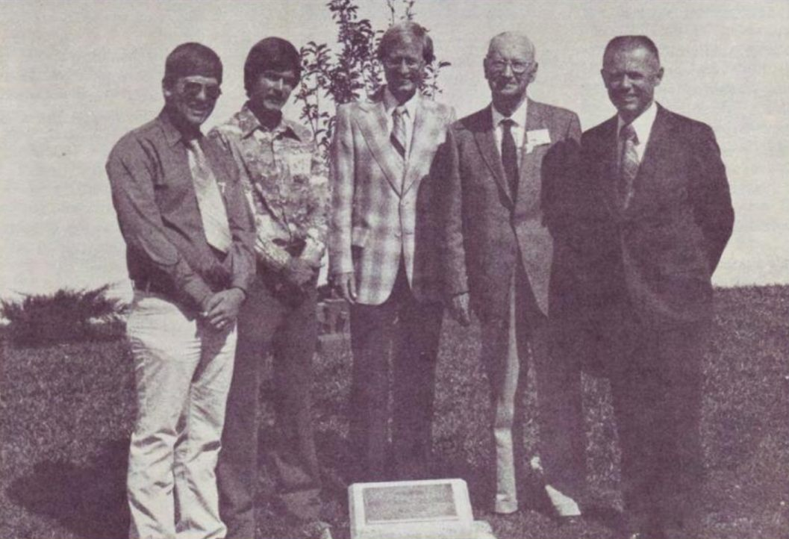
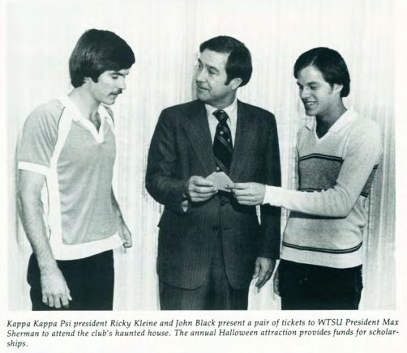

In Memoriam
Rick “Big W” Wilborn
A brother who was never afraid to share his happiness with others.
In the spring of 1977, Alpha Psi Brother Rick “Big W” Wilborn tragically lost his life in a mountain climbing accident in Palo Duro Canyon outside Canyon, Texas.
Rick came to West Texas State University, now West Texas A&M University, in the fall of 1975 after graduating from Copperas Cove High School. He became a member of the Alpha Psi Chapter of Kappa Kappa Psi in the spring of 1976 and was active in both the WTSU Band and WTSU Chorale. Rick was also deeply involved in his church and community.
Those who knew Rick remembered him as someone who was never afraid to share his happiness with others. His warmth, energy, and friendship left a lasting impression on the many people whose lives he touched during his time at West Texas.

October 13, 1979
The memorial
On October 13, 1979, the Alpha Psi Chapter dedicated a memorial plaque in Rick’s honor. Located outside the southwest entrance of Mary Moody Northen Hall on what was then the West Texas State University campus, the plaque bears the inscription:
Rick ‘Big W’ Wilborn
Brothers of KKΨ
The dedication ceremony opened with a prayer by John Black. Cody Myers, a former Alpha Psi president and Rick’s membership candidate classmate, shared a eulogy reflecting on Rick’s two years at West Texas. Alpha Psi President Ricky Kleine officially dedicated the memorial. The ceremony concluded with a performance by the Tuba and Euphonium Choir of Lied from the Quatour à 4 Trombones by Flor Peeters.

Among those in attendance were Dr. J. L. Burke, former Grand President of Kappa Kappa Psi; Dr. Hugh Sanders, Dean of Fine Arts at West Texas; Dr. Gary Garner, Director of Bands and Kappa Kappa Psi Sponsor; as well as Alpha Psi Brothers, friends, and members of the West Texas community who came together to remember Rick.
Rick “Big W” Wilborn remains a part of the history and legacy of Alpha Psi. His memorial continues to serve as a reminder of a Brother who brought joy to those around him and whose time at West Texas, though brief, left a lasting impression.
Whenever a Brother, student, or visitor passes the plaque outside Mary Moody Northen Hall, they are reminded of Rick “Big W” Wilborn and the place he continues to hold in the history of Alpha Psi.